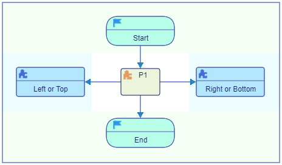
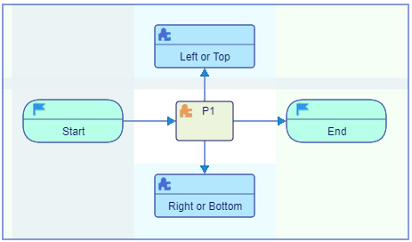
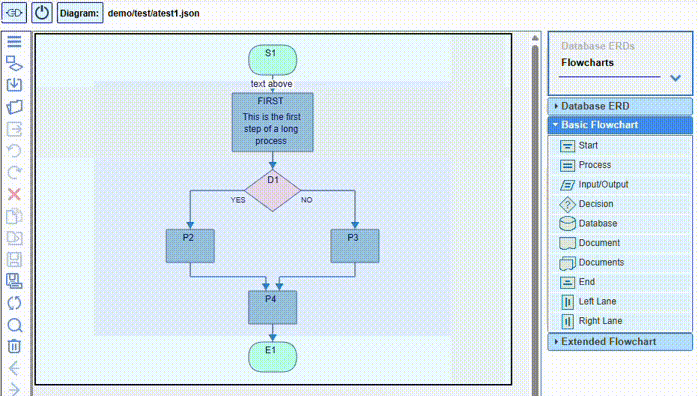

The data flow direction in flowcharts is either top to bottom or left to right, and can be changed or switched back and forth at any time by double clicking the flipping arrow button in the box on the right of the screen above the palette. The flow direction can be changed from the Settings dialog as well.
- Vertical

- Horizontal

The flowchart will be rotated and flipped. This does not otherwise affect its content. The flipping preserves the correlation between the flowchart internal directions and the canvas coordinate system:
